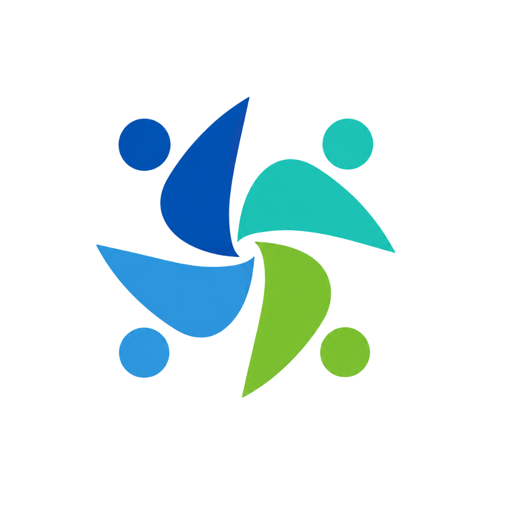

お知らせを読み込んでいます
管理用スプレッドシートとの連携後は、記載内容がここへ自動反映されます。

クロスメソッド™Voice Asset Method
お客様の声、従業員の声、現場の声を集め、課題を視える化し、改善行動へつなげる。 クロスメソッド™は、職場改善・人材定着・健康経営・リスク予防まで支援する仕組みです。
Before / After
Animated Preview声を集めると、改善すべき順番が見えてきます。
課題が点在
優先順位が明確
News
最新のご案内や受付情報をお届けします。
管理用スプレッドシートとの連携後は、記載内容がここへ自動反映されます。
Reality
働く人の課題は、すでに企業の経営課題です。だからこそ、声を拾い、早い段階で状態を視える化する必要があります。
約2人に1人
健康不安や治療と仕事の両立は、一部の人だけの問題ではありません。
出典：国立がん研究センター系資料55.1%
定期健康診断で、労働者の半数を超える人が何らかの所見を抱える状況。
出典：厚生労働省系資料／令和5年48.7万人
過去5年間に介護・看護のため前職を離職。うち無業者は36.4万人。
出典：総務省統計局資料2030年 約318万人
経済損失額は約9兆円と試算。仕事と介護の両立は経営課題です。
出典：経済産業省約719.5万人
令和6年1年間の離職者数。採用だけでなく、定着の視点が重要です。
出典：厚生労働省 雇用動向調査50人未満も義務化
令和10年4月1日から、労働者数50人未満の事業場にも義務化。
出典：厚生労働省3,575件
令和5年度の請求件数。支給決定件数は883件。
出典：厚生労働省声を拾う仕組み
病気、介護、健康不安、メンタル不調、離職。小さな声が先行指標になります。
クロスメソッド™で確認病気、介護、健康不安、メンタル不調、離職。これらは一部の人だけに起きる特別な問題ではありません。
Free Trial
簡単な質問に回答することで、見えにくい課題や、今後確認すべきポイントを整理できます。
Warning Signs
その違和感は、放置すると「離職」「口コミ低下」「事故」「採用難」「管理者の限界」に変わるかもしれません。
「紹介が増えないのは、満足されていないから？」
「退職理由を聞いた時には、もう遅かった。」
「管理者が限界なのに、誰にも言えていない。」
「新人が本音を言えないまま辞めてしまった。」
「ヒヤリは出ているのに、同じ事故が繰り返される。」
「ストレスチェックをしたのに、何も変わっていない。」
Voice Behind Numbers
数字は、声の中に隠れています。
継続年数＝努力の軌跡
お客様の数＝感謝の数
リピート率＝信頼の数
紹介・口コミ＝応援の数
心の余裕＝力を出す余白
睡眠と休息＝働く土台
家庭の安定＝仕事を支える力
幸福感＝働く力の源
勤続年数＝信頼の積み重ね
退職意向＝損失前のサイン
人間関係＝残りたい理由
定着率＝会社に残る答え
理念理解＝進む方向の共有
共感＝自分ごとになる力
行動＝想いが形になる瞬間
温度差＝経営と現場のズレ
評価基準＝頑張る方向の地図
承認＝見てもらえている証
役割＝必要とされる実感
処遇＝報われた実感
二度手間＝見えない人件費
属人化＝止まりやすい仕事
残業＝回らない現場のサイン
ムダな作業＝利益を削る時間
管理者の残業＝負担が集まるサイン
育成の悩み＝人が育たない理由
指示のズレ＝現場が止まる原因
抱え込み＝孤立のサイン
入社後ギャップ＝早期離職の芽
相談相手＝不安の受け皿
職場へのなじみ＝定着の土台
放置された不安＝退職理由の種
ものの見方＝判断の軸
強み＝力が出る場所
苦手＝支えが必要な場所
関わり方＝活かし方の鍵
面談回数＝本音を拾う機会
質問の質＝心を開く鍵
上司への信頼＝本音が出る土台
言えない不満＝後から燃える火種
面接数＝未来の仲間との出会い
質問の質＝本質に近づく鍵
教育コスト＝ミスマッチの代償
定着率＝採用の答え合わせ
応募数＝興味を持たれた数
応募率＝魅力が届いた割合
辞退数＝不安が残った数
採用単価＝伝わらなかったコスト
Support Menu
診断だけで終わらせず、職場改善・健康経営・福利厚生・リスク予防・相談環境までつなげます。
Diagnostics
中心にあるのは、問いです。周囲の声を拾うことで、組織の状態が立体的に見えてきます。
Connections
掲載許可をいただいた企業・事業所のロゴを、つながりの証としてご紹介します。
掲載許可をいただいた企業・事業所を、つながりの証として順次ご紹介します。
Healthy Food
福利厚生を、毎日の食事から。画像と商品名だけをすっきり表示し、クリックで栄養成分を確認できます。
Certification Support
制度の取得を保証するものではありません。公式情報・審査基準に沿って、取り組み状況の整理、足りない項目の確認、申請準備を支援します。
Flow
相談から再確認まで、声がレポートになり、改善行動へ進む道筋を設計します。
課題・目的・対象者を確認。
確認すべき声を選定。
対象者がURLから回答。
強み・課題・優先順位を整理。
判断できる形に変換。
次の行動へつなげる。
変化を見て次へ進む。
Virtual Rooms
個別相談も、セミナー参加も、ここからスムーズに。入室すると、目的に合わせてカウンセリング室・セミナー室をご案内します。